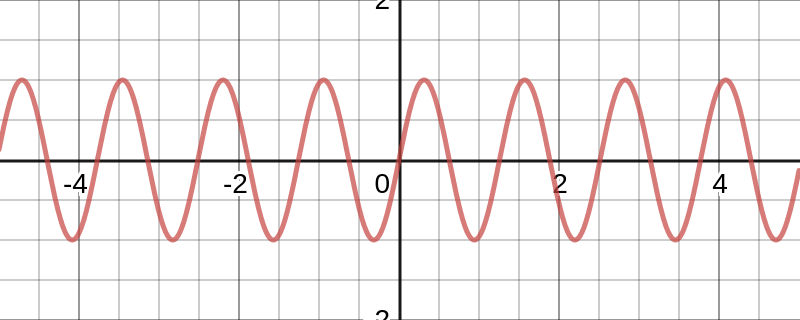
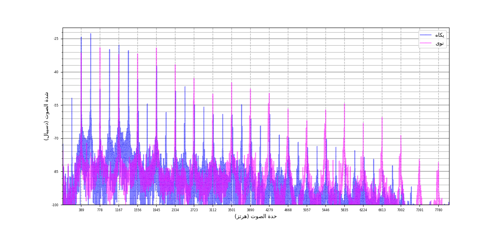
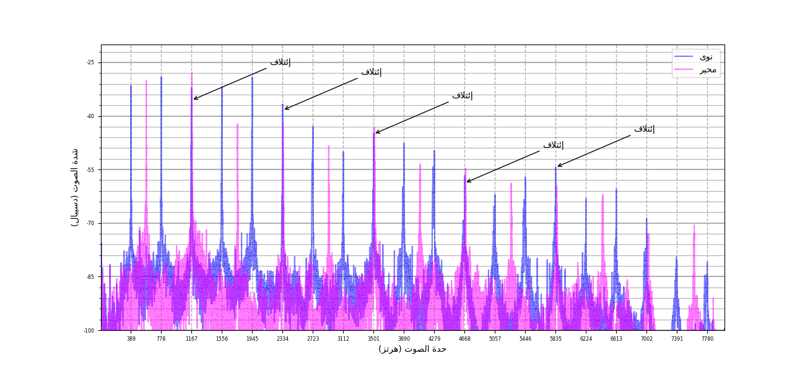
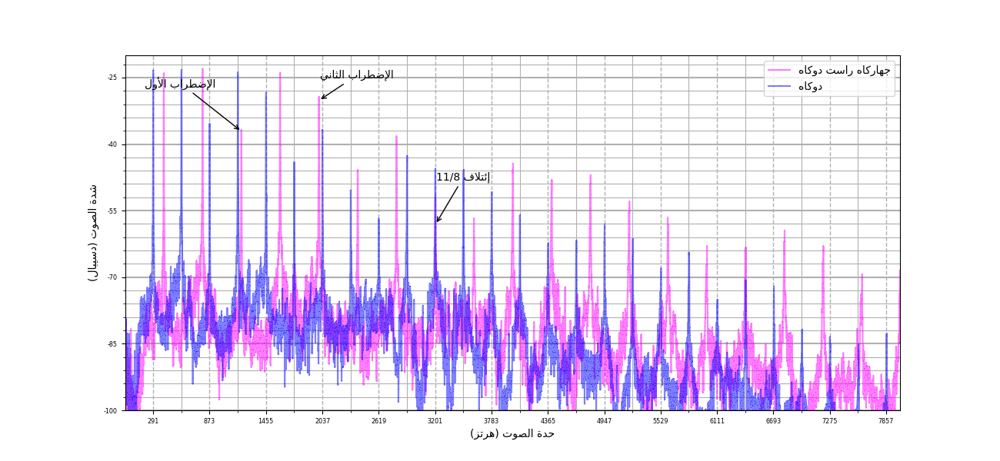
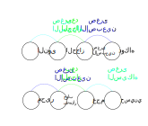

الفهرس
النبرة
تعتبر النبرة أبسط صوت. إذ أنه يمتلك خاصيتين أساسيتين فقط. أولها الحدة تقاس بوحدة الهرتز. الخاصية الثانية هي الشدة و حدتها. سيلي عدة ملاحظات على هذا الصوت:
-
يستطيع السامع أن يميز النبرة إن مزجت بضجيج
-
تحدث نبرتان متقاربتا الحدة إضطرابا في الصوت
-
تتمازج نبرتان متقايستا الحدة لتكون نبرة شدتها أعلى بثلاثة دسيبال.
-
من الممكن أن نفكك أي صوت إلى مجموع نبرات. و هي خاصية تتميز بها كل الموجات سواء كانت مغناطسية أو كهربائية أو حركية.
إن هذا التقسيم نفسه مهما كانت الآلة الموسيقية. لذلك نستطيع تحديد حدة صوت موسيقي بحدة نبرته الأساسية. و هو ما يعرف عموما بالدرجة الموسيقية. و يسمى عموما البعد الموسيقي مجموع درجتين.
الذيل
سنحاول بناء أبعاد موسيقية مؤتلفة بناء على فرضيتنا. رأينا أن الدرجات الموسيقية مجموعة نبرات موسيقية حدتها أضعاف حدتها الأساسية. علينا إذن أن نبني درجتين موسيقيتين تقل فيها الإضطرابات وتكثر فيها الإئتلافات. أبرز بعد تتحقق فيه هذه الخاصية هو الديوان. إذ كل نبرات الدرجة الثانية لالديوان، موجودة في الدرجة الأولى.
سنحاول الآن البحث عن أبعاد موسيقية أصغر من الديوان حتى نقسم الديوان إلى مجموعة من الدرجات المتناغمة. الديوان بعد موسيقي تأتلف فيه النبرة الثانية لالدرجة الأولى مع النبرة الأساسية لالدرجة الثانية. وينجر عنه إئتلاف كل النبرات في الدرجتين. دعنا نجد درجتين تأتلف فيها النبرة الثالثة لالدرجة الأولى مع النبرة الثانية لالدرجة الثانية. لو سمينا حدة الدرجة الأولى \(ح_1\) فإن حدة نبرتها الثالثة تكون ضعفها أي \(3 \times ح_1\). و إن كانت حدة الدرجة الثانية \(ح_2\) فإن حدة نبرتها الثانية تكون \(2 \times ح_2\). يتمثل إئتلاف النبرتين في المعادلة التالية \(2 \times ح_2 = 3 \times ح_1\). نتحصل إذن على قاسم الحدة التالي \({ح_2 \over ح_1} = {3 \over 2}\) . يقابل هذا القاسم البعد الموسيقي التالي \(6 \times \log_2 {3 \over 2}\) أي 3,51 و هو ما يقارب درجة الصول في المقام المتقايس الأبعاد التي يسوى بعدها تحديدا 3,5. حصلنا إذن على درجة النوى
فلنقم بنفس الطريقة بالبحث عن البعد الذي يحقق الإئتلاف بين النبرة الثالثة و الرابعة. فيكون قاسم حدتها \(4 \over 3\). و يكون بعدها الموسيقيو هو 2,49 ما يقارب درجة الفا في المقام المتقايس الأبعاد التي يسوى بعدها تحديدا 2,5. فنكون قد حصلنا على درجة الجهاركا. البعد الذي يحقق إئتلاف بين النبرة الخامسة لالدرجة الأولى والنبرة الرابعة لالدرجة الثانية فنكون قد حصلنا على درجة السيكاه, وأخيرا البعد الذي يحقق إئتلاف بين النبرة الخامسة و الثالثة فنتحصل على درجة الحسيني منخفضة بكمة. نلاحظ فراغا بين درجتي الراست والسيكاه. نستطيع تقسيم هذا البعد على الناحية التالية \({5 \over 4} = {9 \over 8} \times {10 \over 9}\) لالحصول على درجة الدوكاه. نلاحظ فراغا آخرا بين درجتي الحسيني و الكردان. نستطيع تأليف درجة الماهور مع النوى. فيكون نفس البعد الذي فصلنا به الراست و السيكاه.
| النبرة الأولر | النبرة الثانية | قاسم الحدة | البعد الموسيقي | الإسم |
|---|---|---|---|---|
| 1 | 2 | \(2 \over 1\) | 6 | الكردان |
| 2 | 3 | \(3 \over 2\) | 3.51 | النوى |
| 3 | 4 | \(4 \over 3\) | 2.49 | الجهركاه |
| 4 | 5 | \(5 \over 4\) | 1.93 | السيكاه |
| 3 | 5 | \(5 \over 3\) | 4.42 | الحسيني |
| 9 | 8 | \(9 \over 8\) | 1.02 | الدوكاه |
| 15 | 8 | \(15 \over 8\) | 5.44 | الماهور |
ملاحظة
نرى في كل الأبعاد التي تشترك في قاسم حدتها نفس توزيع الإئتلافات. لذلك تشعر الأذن بنفس الإحساس حينما تعزف نفس الأبعاد الموسيقية بدرجات مختلفة. نستطيع إذن تعريف البعد الموسيقي بقاسم حدته.
جودة الأبعاد
يتميز البعد الموسيقي بقاسم حدتي درجتيه مهما كانت حدة درجة إرتكازه. تتكون كل درجة موسيقية من مجموعة نبرات. نميز إذن بين ثلاثة حالات حين نجمع بين درجتين موسيقيتين.
- لا يوجد أي إئتلاف بين الدرجتين. كمثل أبعاد المقام المتقايس الأبعاد.
- كل نبرات الدرجة الثانية موجودة في الدرجة الأولى. أبرز مثال هو البعد (راست, كردان).
- تقع إئتلافات بين جزء من مجموع النبرات, مثل البعد (راست, نوى).
| الرتبة | البعد | الدرجة |
|---|---|---|
| 2 | الديوان | الراست |
| 3 | الديوان+ 3,51 | النوى |
| 4 | ديوانان | الراست |
| 5 | ديوانان + 1,93 | السيكاه |
| 6 | ديوانان + 3,51 | النوى |
| 7 | ديوانان + 4,84 | |
| 8 | 3 دواوين | الراست |
فأما الصنف الثالث فهي أبعاد تكون فيها إئتلافات. هذا لا يعني أنها خالية من النشاز. فعلى سبيل المثال, إ ذا حللنا البعد (راست, نوى), نلاحض إئتلاف ثاني لثالث, أي إئتلاف النبرة الثالثة لالراست مع النبرة الثانية لالنوى. و لكن حدة النبرة الرابعة لالراست (طبقتها جواب الكردان) تقارب حدة النبرة الخامسة لالنوى (طبقتها جواب الماهور), و هو ما يحدث ٱضطراب ضعيف. نجد أبعاد يكون فيها هذا الٱضطراب قوي و مزعج لالسامع. على سبيل المثال البعد \(11 \over 8\). و هو البعد بين الراست و درجة جهاركاه لمقام راست دوكاه. فرغم الإئتلاف هذا البعد قريب من بعدين قويين: بعد الجهاركاه و بعد جهاركاه لراست الذيل.
في بعض الأبعاد يكون الإئتلاف ضعيف لا يسمع. يفقد إذن البعد وظيفته الموسيقية. نذكر على سبيل المثال البعد بين الراست و الماهور:

نلاحظ في هذا البعد أن الإئتلاف ضعيف و غير متوازن. فالفرق بين النبرتين 13 دسيبال. و هو الفرق مثلا بين شدة الصوت لعازف وحيد مقارنة بشدة الصوت لفرقة متكونة من 16 عازف. و الإئتلاف ضعيف أي أن النبرات الأولى(و الأقوى) ستبرز بوضوح و ستطغى على أذن السامع. فحتى يكون بعد في الصنف الثالث جيد يلزم و لا يكفي بعض الشروط:
- يجب أن يكون إئتلافا بين نبرتين قويتين. كلما تقدمنا في سلسلة النبرات, كلما ضعفت النبرة. فإذا نظرنا مثلا إلى البعد \(1024 \over 729\) نرى أنه إئتلاف بين نبرتين منعدمي القوة. فعلى قاسم الحدة أن يشتمل على بسط و مقام صغيرين.
- يجب أن يكون إئتلافا بين نبرتين متقاربتي القوة حتى تشعر به الأذن.
نلاحظ أنه هنالك ثلاثة أبعاد لالدرجات المتتالية:\(9 \over 8\) ,\(10 \over 9\) ,\(16 \over 15\). لو قارنا هذه الأبعاد بالتسميات محير سيكاه و محير عراق, نستنتج أسماء هذه الأبعاد في الموسيقى التونسية:
- بعد المحير \(9 \over 8\)
- بعد العراق \(10 \over 9\)
- بعد السيكاه \(16 \over 15\)
تبقى أفضل طريقة لمعرفة جودة البعد الموسيقي هو الإستماع إليه.
الدرجات السلسة
يعتبر الموسيقيون في الغرب أن قلب المقامات و روحها تكمن في الإئتلاف الثلاثي بين الدرجات الأولى و الثالثة و الخامسة. نلاحظ في الذيل خصوصية نادرة بين الدرجات الراست و السيكاه و الحسيني, ربما تجعلنا نلقب هاته الدرجات بروح المقام. البعد راست سيكاه هو إئتلاف خامس مع رابع. أما البعد راست حسيني فهو إئتلاف خامس مع ثالث. إذن فالدرجات الثلاثة تأتلف على نفس النبرة. نستطيع أن نعمم هذه العلاقة إلى كل بعد فيه إئتلاف. يكفي أن تعتبر أي مجموعة من الأبعاد في السلسلة التالية:
| رتبة البعد | قاسم الحدة | البعد الموسيقي |
|---|---|---|
| 1 | \(2 \over 1\) | 6 |
| 2 | \(3 \over 2\) | 3,51 |
| 3 | \(4 \over 3\) | 2,49 |
| 4 | \(5 \over 4\) | 1,93 |
| 5 | \(6 \over 5\) | 1,58 |
| 6 | \(7 \over 6\) | 1,33 |
| 7 | \(8 \over 7\) | 1,16 |
| 8 | \(9 \over 8\) | 1,02 |
| 9 | \(10 \over 9\) | 0,91 |
| 10 | \(11 \over 10\) | 0,83 |
| 11 | \(12 \over 11\) | 0,75 |
كل الأبعاد الموسيقية المؤتلفة تنقسم إلى أبعاد موسيقية في هذا الجدول. إذا أخذنا على سبيل المثال البعد \(11 \over 9\), و هو وسطى زلزل, فهو ينقسم إلى \({11 \over 9} = {10 \over 9} \times {11 \over 10}\), و هما البعدان التاسع و الحادي عشر في هذا الجدول. تمثل بقية أبعاد هذا الجدول الدرجات الأخرى التي تأتلف في نفس النبرة. فالدرجة السابعر على سبيل المثال تقرب من اللا المخفوضة و تمثل البعد \(11 \over 7\) مع إرتكاز الراست. نرى أيضا درجة تقرب من السي, بعدها \(11 \over 6\). بعد هاتين الدرجتين \(7 \over 6\) و هو بعد الحجاز. نستطيع بنفس الطريقة البحث على الدرجات المؤتلفة في القرار. نرى مثل بأن الدرجة العشرين في الجدول و هي درجة العجم عشيران في الديوان الثاني في القرار, تندمج تماما مع درجتي وسطى زلزل.
الإصبعين
يرتكز الإصبعين على درجة الدوكاه. يختص هذا المقام بفا مرفوعة منخفضة قليلا (درجة الحجاز) و بمي تتراوح بين المي المخفوضة و المي نصف المخفوضة (فلنسميها صغرى الإصبعين). يتكون أيضا هذا المقام من عقد محير سيكاه على درجة الصول. يبدو أن البعد دوكاه حجاز يساوي البعد راست سيكاه في الذيل و هو البعد \(5 \over 4\). أما الدرجة الثانية في المقام فلديها قدرة على الإئتلاف مع درجة الحجاز أكثر من درجة الدوكاه, بسبب ضعف إئتلافات الأبعاد الصغيرة. و أرجح بعد لٱئتلاف الدرجة الثانية مع درجة الحجاز هو بعد الحجاز \(7 \over 6\). تشكل درجتي الدوكاه و النوى البعد \(4 \over 3\) المعتاد في جل المقامات لالدرجة الرابعة. كما تشكل درجتي الدوكاه و الحسيني البعد \(3 \over 2\) المعتاد لالدرجة الخامسة. أما الدرجة السادسة فهي درجة العجم و أقرب بعد جيد يقاربه هو البعد \(8 \over 5\). فتكون أيضا درجة مؤتلفة مع النوى بعدهما \(6 \over 5\). فأما درجة الكردان فهنالك بعد يألفها مع النوى و بعدين آخرين يألفانها مع الدوكاه. في الحالة الأولى نألف النوى مع الكردان مثلما ألفنا بين الراست و الجهاركاه أي بالبعد \(4 \over 3\). و هو الأكثر تداولا في موسيقتنا. إذ أن الدور الموسيقي لالكردان في جل المقامات التي ترتكز على الدوكاه, هو التناغم مع النوى في العقد الثاني لالمقام. وهي نفس درجة الكردان المستعملة في الذيل. لكن هذه الدرجة لا تتناغم مع الدوكاه. فإذا أردنا التأليف بين الدوكاه و الكردان لنا حلان:
- البعد \(9 \over 5\), بعده الموسيقي: \(5,088 = 6 \times \log_2 {9 \over 5}\). لنسميه الكردان الأعلى. تشكل هاته الدرجة بعد وسطى الحسين مع درجة الحسيني.
- البعد \(7 \over 4\), بعده الموسيقي: \(4,84 = 6 \times \log_2 {7 \over 4}\). لنسميه الكردان المخفوض. تشكل هاته الدرجة بعد الحجاز مع درجة الحسيني.
من المعتاد أيضا أن نستعمل درجة الراست و درجة الشاهناز. فأما درجة الشاهناز فهي تشكل بعد السيكاه مع الدوكاه أي \(16 \over 15\), فيكون البعد شهناز مع الدرجة الثانية لالإصبعين بعد رنان و جيد يساوي قاسم حدته \(8 \over 7\). أما البعد \(9 \over 8\) الفاصل بين الراست و الدوكاه, و الذي رأيناه في الذيل, لا شك في جودته. ولكن ينجر عنه بعد سئ بين الراست و الدرجة الثانية لالإصبعين. ربما الدرجة الوحيدة التي تأتلف مع الدوكاه و صغرى الإصبعين هي التي يكون بعدها مع الدوكاه هو بعد الحجاز \(7 \over 6\). فيكون بعد هذه الدرجة مع الثانية هو نفسه بعد الدوكاه مع الحجاز أي \(16 \over 15\). فنكون قد «قلبنا الإصبعين».
طبعا ليس هذا قلبة الإصبعين الذي نعرفه في الموسيقى التونسية. لكن من الممكن إستعمال نفس الفكرة لبناء سلم موسيقي يشبه ٱنقلاب الإصبعين الذي نعرفه.
بطبيعة الحال ليست هذه الطريقة الوحيدة لعزف إنقلاب الإصبعين. من الممكن أيضا عزف عقد الإصبعين على درجة الحسيني. و لكن يجب الإنتباه إلى أنه مثل ما رفعنا درجة الكردي المستعملة في النهاوند فإنه يجب رفع درجة العجم.
لالإصبعين العديد من الأبعاد التي تزداد جودتها في الديوان الثاني و الثالث:
يجدر أيضا أن نشير إلى إمكانية ٱعتبار درجة عالية لالحجاز و هو ما يجدر تسميته ربما بالإصبعين الكبير. فيكون البعد بين صغرى الإصبعين و الحجاز العالية \(6 \over 5\). و ينجر عنه أن البعد بين الدوكاه و الحجاز الكبير \(9 \over 7\). و هو بعد نجده في مقامات أخرى مثل الصبا أو السيكاه.
راست الذيل
يتكون راست الذيل من فا مرفوعة و مي مخفوضة. البعد الذي يؤلف بين الراست و الرابعة هو \(7 \over 5\). فلنسمي هاته الدرجة حجاز الراست. يبدو هذا البعد قوي الإئتلاف, و لكن قربه من بعد النوى يجعل فيه إضطرابا صغيرا. نستطيع تقسيم هذا البعد إلى بعدين: \({7 \over 5} = {7 \over 6} \times {6 \over 5}\). البعد الأول هو \(6 \over 5\) و هو وسطى الحسين. البعد الثاني \(7 \over 6\) هو بعد الحجاز. فينجر على ذلك طريقتين لتقسيم بعد حجاز الراست. إما أن نبدأ ببعد الحجاز فيليه وسطى الحسين أو العكس. فإذا ٱختار العازف أن يضع وسطى الحسين في الأول, نحصل على درجة الكردي, و هي درجة مؤتلفة مع الراست و النوى. أما أما إذا ٱختار أن يبدأ ببعد الحجاز, نحصل على درجة أقل رنينا مع الراست و النوى مقارنة بالخيار الأول. لكن نجد لها خاصية متميزة: تأتلف النبرة السابعة لالراست مع النبرة الخامسة لحجاز الراست, و تأتلف النبرة السابعة لالراست مع الالنبرة السادسة لالثالثة. فالدرجات الثلاثة تأتلف في نفس النبرة. إذا بحثنا على درجة أخرى تأتلف فيها نفس النبرة. فعلينا بدراسة البعد \(7 \over 4\). نكون قد حصلنا على درجة أقل حدة من درجة العجم بقليل. دعنا نسميها درجة الليل. فبذلك قد وجدنا أربع درجات سلسة.
الصبا
يقسم الصبا البعد دوكاه صبا إلى 3 أبعاد متوازنة. التقسيم الرياضي الذي يقرب الأكثر إلى هذا التقسيم هو التالي: \( {15 \over 14} \times {14 \over 13} \times {13 \over 12} = {15 \over 12} = {5 \over 4}\). نستطيع ترتيب هاته الأبعاد بعدة طرق, لكن لالحصول على ثنائيات جيدة نختار التقسيمين التاليين:
فأيهما الأنسب و أيهما الأقرب إلى المعمول به؟ نرشح الطريقة الأولى لسببين. نلاحظ وجود البعد \(15 \over 14\) و هو ما سميناه صغرى الإصبعين. رأينا أيضا أن هذا البعد, إذا ولاه البعد \(6 \over 5\), يكون ما سميناه بالإصبعين الكبير. و هو ما نجده في الصبا بين الثالثة و الصبا و الحسيني في الإختيار الأول. السبب الثاني هو البعد \(7 \over 6\) الذي سميناه ببعد الحجاز و الذي يفصل الدوكاه بالثالثة في مقام الصبا.
السيكاه
ترتكز نغمة السيكاه على درجة السيكاه. تحتوي على درجة الجهاركاه و على عقد إصبعين نوى. نلاحظ إذن الأبعاد التالية:نلاحظ وجود البعد الذي وجدناه في الإصبعين الكبير, ولكن مقسم بالطريقة المعاكسة. لم نفهم بعد دور الجهاركاه. نلاحظ وجود درجات سلسة وهي : السيكاه, صغرى إصبعين النوى, الماهور و المحير. تتناغم هاته الدرجات في النبرة التاسعة لالسيكاه.
الحسين
هذا الطبع فريد من نوعه. كل درجاته سلسلة, تأتلف في النبرة الثانية عشر لالدوكاه. زيادة على هذا يحتوي هذا الطبع على إئتلافات عدة في طبقات مختلفى الحدة و هو ما يجعله ربما طبع النشوة و الأفراح.
نرى أن الدرجات من الدوكاه إلى الحسيني سلسة. لو أردنا المواصلة في السلسلة فنحصل على درجتي: الماهور مرفوعة بكمة ثم المحير.
المحير سيكاه
نلاحظ أن درجة البوسلك التي تمثل خاصية أساسية في المحير سيكاه لا مجال في تغييرها. فالبعد بينها و بين النوى يشكل علة أساسية في هذا المقام. و هو ما يجعلنا نتحاشى درجة النوى في هذا العقد مثل ما نراه في جل الجمل المتداولة في هذه النغمة. نرى أيضا نفس المشكل في العقد الثاني. أي درجتي الحسيني و الكردان. إذا بدأ العقد الثاني على درجة النوى, نستطيع إستعمال نغمة الإصبعين مثلا على درجة النوى لتفادي هذا المشكل. أما إذا كان العقد الثاني على درجة الحسيني, فنغمة الإصبعين على الحسيني ستغير درجة الكردان الذي يشكل إضطرابا مع الحسيني. تمثل أيضا درجة الراست درجة مضطربة إذ أن البعد بين راست و البوسلك نشز. و لكن درجة الشهناز متناغمة مع درجة البوسلك.
الراست
يختص مقام الراست بثلاثيته. و هو بعد مدروس من قديم الزمان عرف بوسطى زلزل أو وسطى الفرس. و قد حدد قاسم حدته من قديم الزمان و هو\( 11 \over 9\). هذا البعد ينقسم طبيعيا على النحو التالي:\({11 \over 9} = {11 \over 10} \times {10 \over 9}\). رأينا هذين البعدين في المقامات السابقة. فالبعد \(11 \over 10\) هو الصغرى الثانية لالحسين. و البعد \(10 \over 9\) هو البعد دوكاه سيكاه في مقام الذيل و هو ما يسمى ببعد العراق. وهو أيضا البعد بين وسطى الحسين و النوى. فإذا وضعنا صغرى الحسين الأولى قبل العراق نتحصل على ما يسمى في الشرق بالسيكاه. وإذا عكسنا المقام, و أضفنا إليه البعد الرباعي. عادة ما تكون الدرجة الثانية لالمقام درجة الدوكاه القارة. و يغلب أيضا ٱستعمال عقد الراست على درجة النوى لتكون مقام الراست.\(4 \over 3\) نتحصل على عقد الراست.
نلاحظ أن مقام الراست يتكون من عقدين منفصلين. فدرجات العقد الأول غير متناغمة مع درجات العقد الثاني. لو أردنا بناء عقد ثاني مؤتلف مع العقد الأول نستطيع البحث عن الدرجات السلسة التي تأتلف مع البعد وسطى زلزل. يمكننا الحصول على مقام يتكون على وسطى زلزل, يليه مقام السيكاه الذي وصفناه سابقا:
نكون قد ٱقتربنا إلى مقام يشبه السوزناك. نرى أن درجة الدوكاه غير متناغمة مع درجات العقد الثاني. و لكن إذا ٱخترنا تقسيم وسطى زلزل بقلب بعديها, نحصل على الأبعاد التالية.
ملحقات
قواعد رياضية
الجمع بين بعدين
\(ق_{1+2} = ق_1 \times ق_2\)
لو أخذنا بعدين موسيقيين قاسميهما \(ق_1\) و \(ق_2\) و الدرجة \(د_1\). نستطيع بناء الدرجتين \(د_2\) بحيث البعد بين الدرجتين \(د_1\) و \(د_2\) هو \(ق_1\) و \(د_3\) بحيث البعد بين الدرجتين \(د_2\) و \(د_3\) هو \(ق_2\). \(ق_1 = {حدة(د_2) \over حدة(د_1)}\) و \(ق_2 = {حدة(د_3) \over حدة(د_2)}\). فجمع البعدين \(ق_{1+2}\) يساوي \(ق_{1+2} = {حدة(د_3) \over حدة(د_1)} = {حدة(د_3) \over حدة(د_2)} \times {حدة(د_2) \over حدة(د_1)} = ق_1 \times ق_2\)
العلاقة بين قاسم الحدة و البعد الموسيقي
\({\log_2{ق}} \times 6 = ب\)
لو سمينا \(ق_و\) قاسم وحدة البعد في المقام متقايس الأبعاد, فإن \(ق_و^6 = 2\) إذ أن 6 أبعاد تساوي الديوان. لذلك يكون \(\log{ق_و} = {\log{2} \over 6}\). فلن نعتبر بعد موسيقي قاسمه \(ق\). فإن بعده الموسيقي \(ب\) يحقق المعادلة التالية: \(ق_و^ب = ق \Rightarrow ب \times \log{ق_و} = \log{ق} \Rightarrow ب \times {\log{2} \over 6} = \log{ق} \Rightarrow ب = 6 \times \log_2{ق}\)